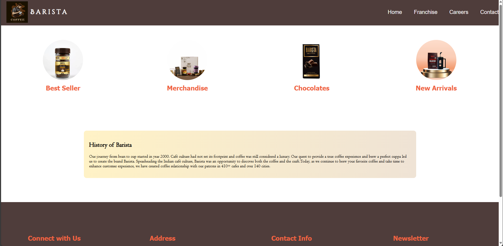
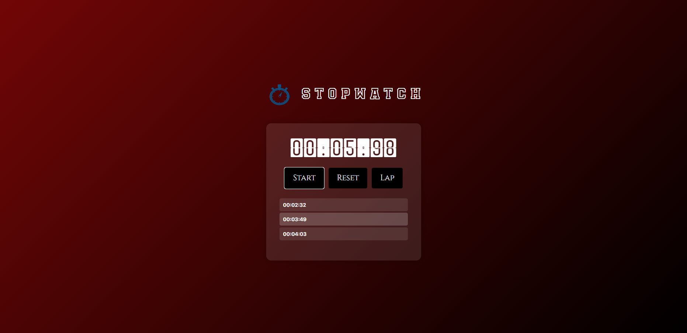
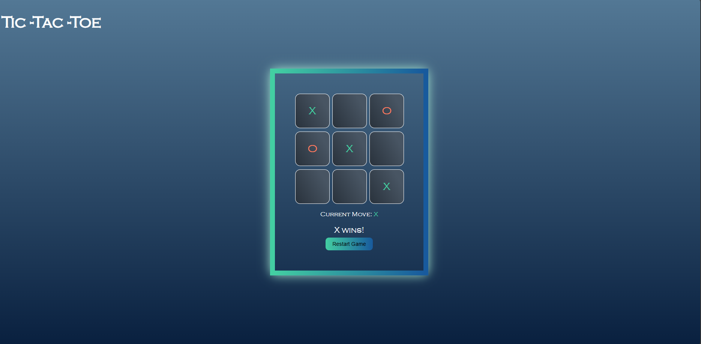

Hey there, I'm immersed in the learning phase of full-stack development, eager to craft seamless digital experiences. Beyond the screen, I'm a AUTO ENTHUSIAST, finding inspiration in the open road and the stories behind each vehicle. In the future, I plan to channel this passion into writing engaging automotive blogs, exploring the intersection of technology, design, and the Engineering . Let's connect and build something amazing together!
Excited to share my first project during my internship at Prodigy Info Tech: a modern website for BARISTA.
A stopwatch web application with lap functionality for precise time tracking.
"A minimalist Tic Tac Toe game allowing players to make moves alternately in a single-player mode, featuring a clean interface and win tracking.
